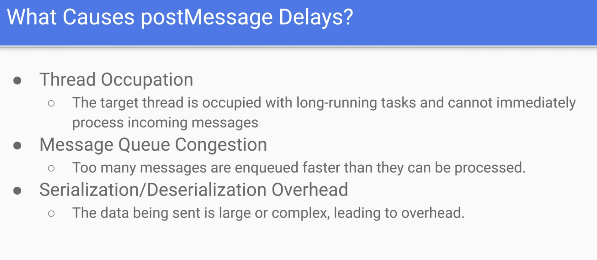
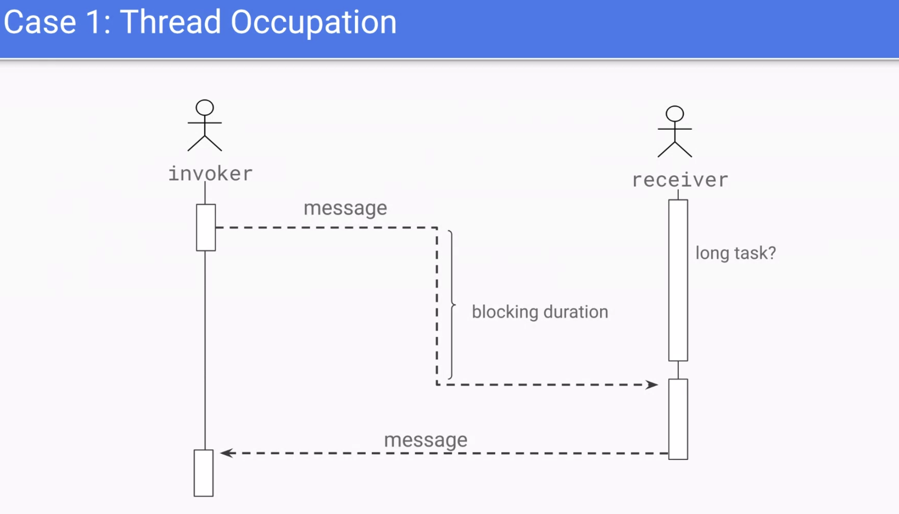
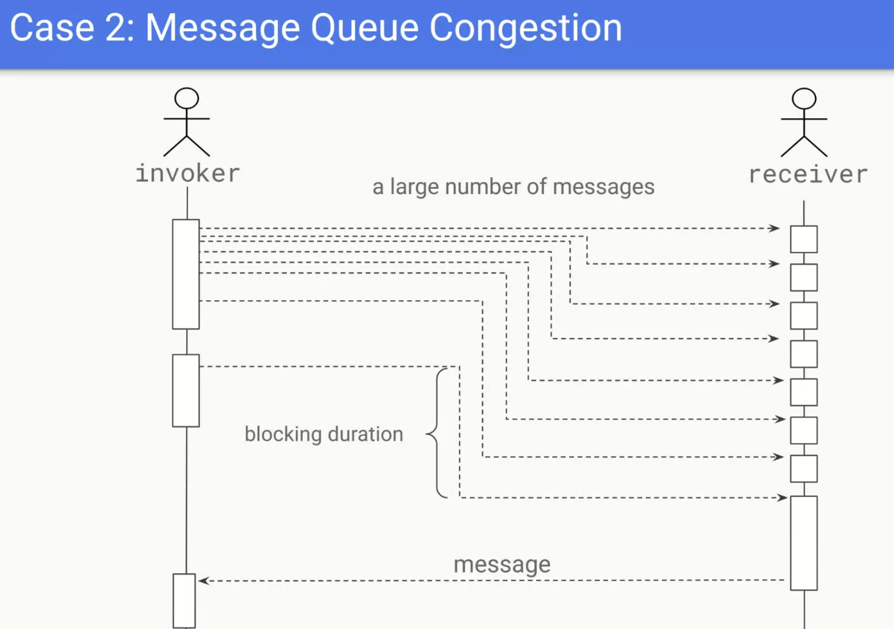
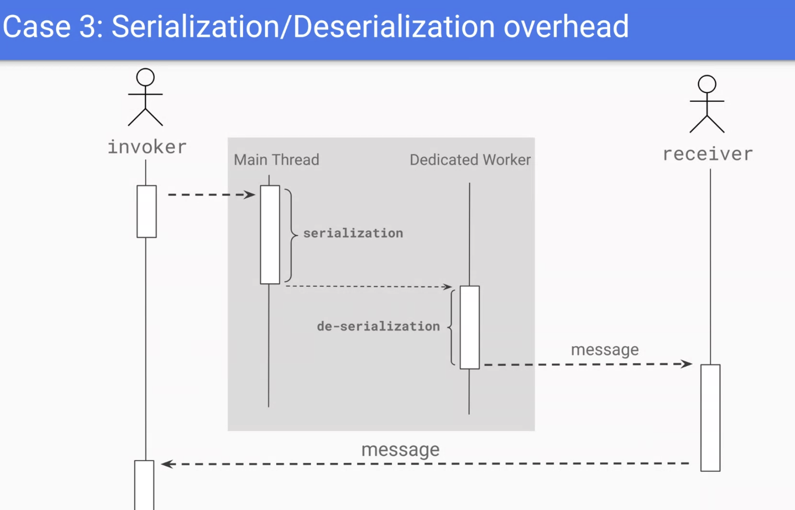
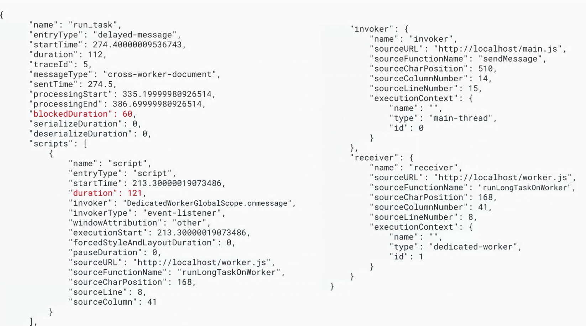
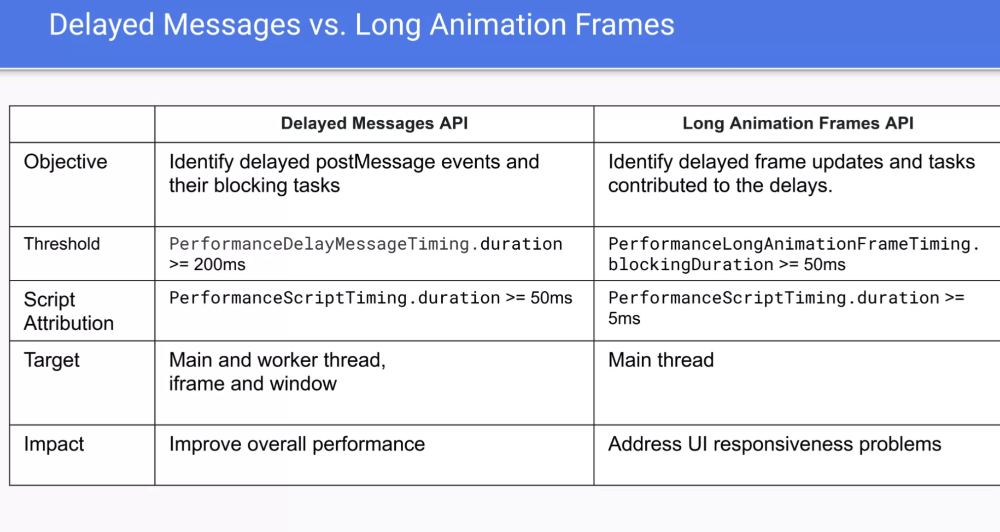
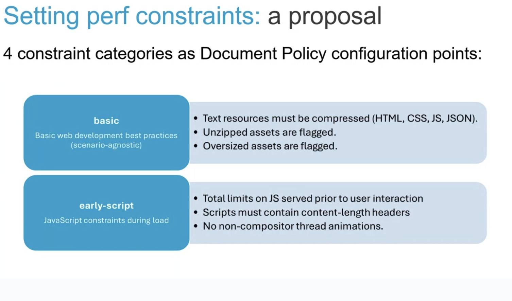

Participants
Joone Hur, Sean Feng, Yoav Weiss, Nic Jansma, Gouhui Deng, Fabio Rocha, Noam Helfman, Patrick Meenan, Luis Flores, Nishitha Dey, Giacomo Zecchini, Barry Pollard, Carine Bournez, Noam Rosenthal, Dave Hunt, Nazim Can Altinova, Bas Schouten,
Admin
- July 3rd - skip
- Next meeting: July 17th
- TPAC 2025 meetings: All day Mon, Tues and half-day Thurs
Minutes
- Joone: want to talk about challenges with PostMessage
- .. see significant delays of data between workers and the main thread UI
- ..

height: 830.00px; margin-left: 0.00px; margin-top: 0.00px; transform: rotate(0.00rad) translateZ(0px); -webkit-transform: rotate(0.00rad) translateZ(0px);" title=""> - ..

height: 1094.00px; margin-left: 0.00px; margin-top: 0.00px; transform: rotate(0.00rad) translateZ(0px); -webkit-transform: rotate(0.00rad) translateZ(0px);" title=""> - .. need to measure blocking duration

height: 1150.00px; margin-left: 0.00px; margin-top: 0.00px; transform: rotate(0.00rad) translateZ(0px); -webkit-transform: rotate(0.00rad) translateZ(0px);" title="">- .. behaves like a long task

height: 1156.00px; margin-left: 0.00px; margin-top: 0.00px; transform: rotate(0.00rad) translateZ(0px); -webkit-transform: rotate(0.00rad) translateZ(0px);" title="">
- Deserialization happens inside the message handler (in Chromium)
- .. Need a new API to tell where the delay is coming from
- .. currently there’s no way to know what the queue time was
- … Propose PerformanceDelayMessageTiming
- … end to end timing
- … invoker and receiver tell us the direction of the message
- … script property gives us long tasks
- … startTime - when the message was invoked
- … blockedDuration - tells us how fast the message queue was cleared
- … send time - after serialization at the invoker side
- … processingStart - after deserialization

height: 916.00px; margin-left: 0.00px; margin-top: 0.00px; transform: rotate(0.00rad) translateZ(0px); -webkit-transform: rotate(0.00rad) translateZ(0px);" title="">- … will support worker, window, message port
- … Can also give you information regarding the execution context
- … We can also extend postMessage to provide a task name that this can reflect, making debugging easier
- … Explainer outlines 200ms as the threshold, but considering making it configurable or a lower threshold
- Bas: Would it only work for same origin invokers/receivers/
- Joone: yes
- Bas: the way different engines handle postMessage is different. If there’s a blocking script it’s simple to provide information similar to LoAF. But there are a lot of different reasons inside of browsers to delays, and I’m concerned that the API would just expose weird engine quirks that are not actionable by developers
- … What information do you want to provide?
- Joone: want to measure delays of messages between workers and window
- Bas: What are the possible sources of delay? Even serialization/deserialization are engine-specific concept
- Joone: Spec says that they should happen. Manual instrumentation makes it hard to measure this
- NoamH: What we want are things that are actionable for developers. Serialization is impacted by the type and amount of payload, so it would be important regardless of engine implementation.
- … want to identify bottlenecks
- NoamR: Whatever weird browser stuff happens is already observable, using a separate event loop. As long as we’re not trying to measure time of serialization specifically, but when did my script receive the handles, we can already measure it, even in cumbersome ways
- Bas: This isn’t an observability/security concern. Looking at the spec and serlialization latency is specified so we can report.
- … Also LoAF things where the script is blocking the receiver also make sense.
- NoamR: I would start without the serialize duration because that bit is more browser specific.
- Bas: So you’d want latency to delivery?
- NoamR: Easier to reason about. Serialization is similar to how LoAF exposes compiling. Serialization can only happen in a certain moment, as otherwise the object can change
- … One bit in the spec where serialization is observable
- Bas: So you want the time to delivery separate from the time to total execution
- … So two numbers and information between those two numbers
- NoamR: Similar to LoAF
- … Wanted to say that it’s nice to see this coming along. Better than Long Tasks for workers, as it observes it from the outside.

height: 1078.00px; margin-left: 0.00px; margin-top: 0.00px; transform: rotate(0.00rad) translateZ(0px); -webkit-transform: rotate(0.00rad) translateZ(0px);" title=""> - Joone: different from LoAF
- NoamH: With this proposal, will we be able to distinguish on the receiver if there’s a long task blocking it, vs. many small tasks? How can we know if we have too many short messages vs. a single long one?
- Joone: the script properties would expose the delays of the tasks. It only provides long tasks that take more than 50ms. Alternatively we can add a property that counts the number of the tasks, so you can see how many short ones were there
- Bas: “Tasks” - postMessage tasks specifically? The receiver can be the main thread
- Joone: yeah
- NoamH: So you can report the task queue length on the receiver
- Bas: Not sure about the value
- Joone: developers don’t know how many tasks we send the receiving context
- Bas: but does the number provide value? I don’t see it being actionable
- NoamR: If the author knows what their tasks mean, it could be useful
- NoamH: I think it can be helpful when investigating bottlenecks. If there isn’t a long task, it’s interesting to understand there are many small tasks causing congestion
- Bas: But it doesn’t really tell you that. Latency can also be elsewhere
- NoamH: important to be able to distinguish between the cases
- Bas: Maybe “total script time”
- NoamH: and “number of tasks” give your the average task duration
- Joone: already have a local implementation, we can upstream it behind a flag
- Yoav: This feels like something that still needs some incubation before landing in this group (that is normal)
- … Having some implementation experience and debugging using that implementation will help a lot of the conversation around “which parts are useful” and “which parts are missing”
- … Implementation can help guide that discussion with real-life experience
- … Kick off incubation around this in parallel with experimentation
- … In a few months we’ll discuss where things are at
- Luis: wanted to continue conversation (after BlinkOn and the WG call)
- .. Want to discuss some of the details. Still early stage but want to build it right
- ..

height: 886.00px; margin-left: 0.00px; margin-top: 0.00px; transform: rotate(0.00rad) translateZ(0px); -webkit-transform: rotate(0.00rad) translateZ(0px);" title=""> - .. Want to focus on the “basic” category
- .. generic best practices - compression for text resources, opt-in for compressed formats and keeping non-compressed resources small (data URLs - 100KB, images - 1MB, fonts - 96KB)
- .. Given that this is an opt-in, we have more room to apply restrictions
- … Want a boolean configuration point, where the top-level requires a policy and the iframes agree to it
- … Any violation triggers a report
- … Request to the iframe will include the Require-Document-Policy header
- … Wanted to define specific numbers and wanted feedback on that
- … what happens when there’s a violation?
- … browser warnings, throttling and even blocking of the resources.
- … Similar to heavy-ad interventions, we can tell the user why the resource was blocked
- … Blocking can result in functionality breakage and the top-level document assumes some level of risk. Report-only mode enables developers to test that in advance.
- … Aim to enable enforcement through blocking of resources
- … Want to create a prototype, try it using an Origin Trial and see what works for developers
- … Want to define specific values, but future updates may be necessary
- … e.g. if new formats emerge, the limits would change
- … Otherwise we may add new criteria (e.g. header bloat)
- … One option is to move the semantics of the categories (not great, as it could break things)
- … Another (not great) option is to never update
- … We aim to use some versioning, where a new version of the policy would update the limits
- … We could also introduce new policies that include the same criteria + updates
- Gouhui: this can leak the behavior of the embedded frame if certain behavior e.g. loads a large image. There’s a privacy leak
- Luis: Past proposals had some fuzzing in the limits
- Bas: that won’t address that, but the iframe would have to accept this mode in order to load. So e.g. a bank iframe won’t accept it.
- Yoav: Even if they would, they wouldn’t allow you to apply those limits
- Luis: In that case, e.g. bank login, it wouldn’t want to have it embedded in the first place
- Bas: My point, login screen is restricted, they wouldn’t allow it being embedded
- Guohui: Embedder has a chance to reject, doesn’t have to agree to the policy
- … Depends on on sensitivity
- Luis: That’s Document Policy, the embedded frame has to acknowledge
- Nic: and because it’s opt-in the embedded page has to accept these restrictions and know that they’re not leaking anything meaningful
- … how can we continue the conversation?
- Luis: Asking for folks to review the document and the explainer. Looking for feedback
- BlinkOn 20 - Performance Control of Embedded Content
- Performance Control of Embedded Content - Basic